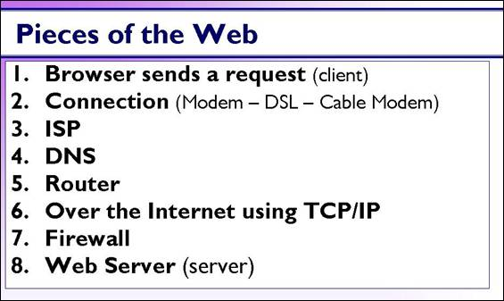

Pieces that make up the Web

[D]Here's the pieces we will be fiddling around with.
First we need a (1) browser. Pick a browser, any browser. They all work on the same principle, which is to ask for a web page, get lots of files in return, puts these together and displays the results.
(2) We need a connection to the Internet so we can request information from different servers.
(3) This involves using an ISP (Internet Service Provider) which is where our connection is actually made to the Internet.
(4) The ISP also maintains a DNS (Domain Name Server) which is a simple lookup table. It takes the words we type in as a URL and finds out what the IP address of that web server.
(5) Our request will bounce from router to router,
(6) across the Internet, until it finally ends at
(7) the web server's firewall. If the ports match,
(8) The web server will receive and process the request sending a copy of the requested file(s) back to the client computer.
This is just the first half of the journey of our web page. Once a request is made then the other half is sending the web page back to the browser to be displayed.
But first, who figured all of this out?